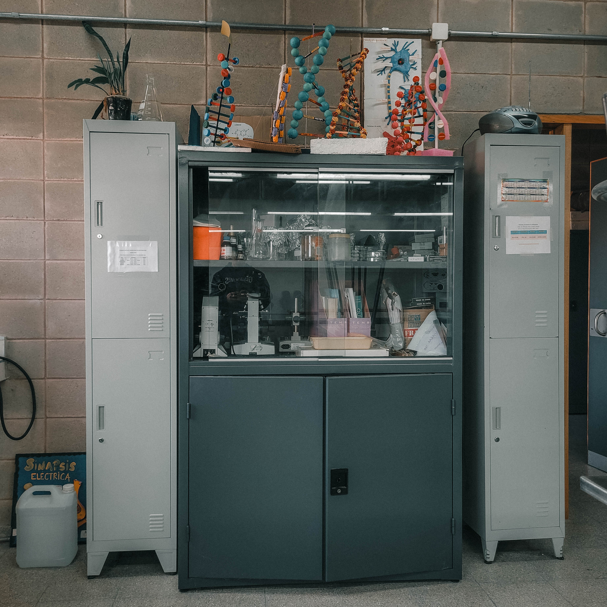
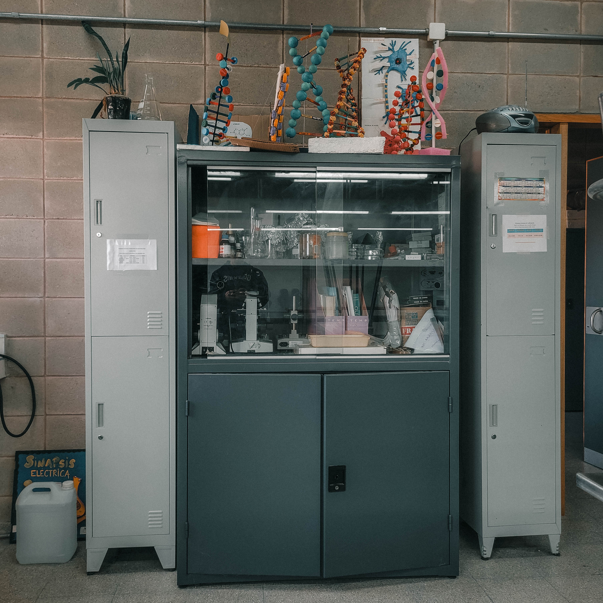
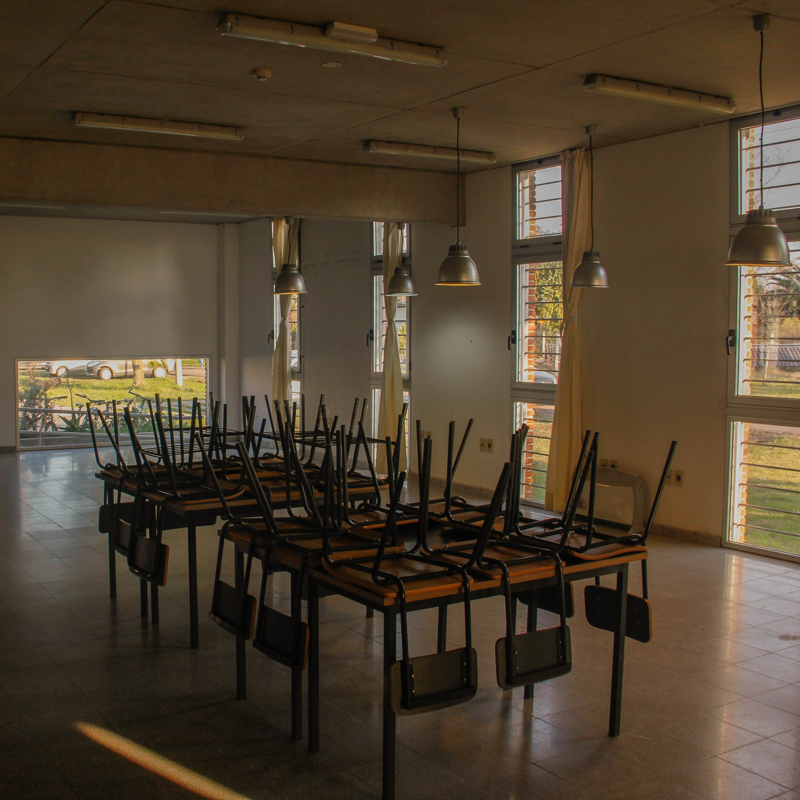
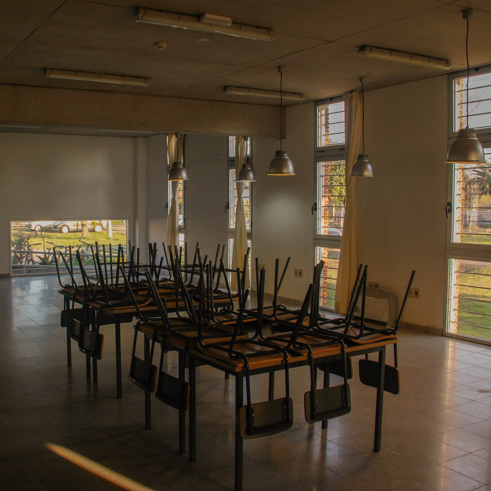

Instalaciones
Fundado el 9 de marzo de 2017 por resolución 407/17, el Polo Tecnológico Tacuarembó ofrece una variedad de instalaciones modernas y equipadas para
apoyar el aprendizaje y el desarrollo de habilidades, desde salones de clase hasta talleres y laboratorios, pasando por una biblioteca y una cantina, todo
diseñado para brindar una experiencia educativa integral y de alta calidad.

 

Taller de Química
El taller de Química ofrece herramientas variadas y un espacio y ambiente apto para cualquier tipo de proyecto práctico y/o teórico.

Sala de Informática
En la sala de informática, los estudiantes tienen acceso a tecnología para aprender y desarrollar habilidades y proyectos digitales esenciales.


Taller de Electromecánica
En el taller de electromecánica, los estudiantes desarrollan habilidades prácticas en la integración de sistemas eléctricos y mecánicos.
 

Biblioteca
La biblioteca es un espacio tranquilo y cómodo, diseñado para que los docentes y estudiantes se concentren en sus tareas académicas.